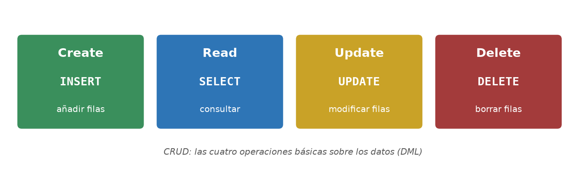
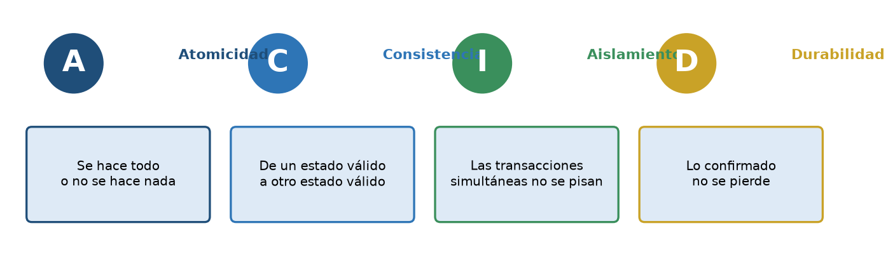
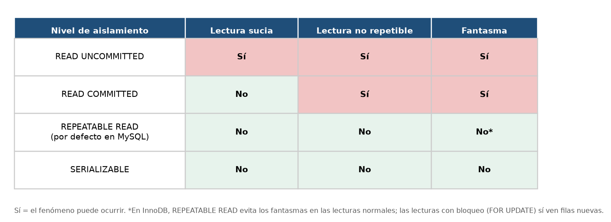
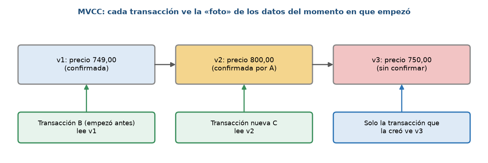
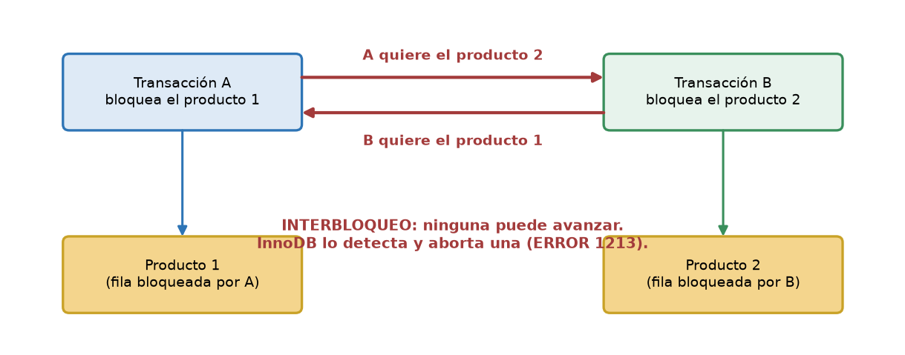

Inicio › UT5
Ver ejercicios de UT5 (ordenados por dificultad)
Qué se trabaja
INSERT,UPDATE,DELETEyINSERT … SELECT.- Transacciones (ACID),
COMMIT/ROLLBACK, niveles de aislamiento y bloqueos.
Pruébalo en el laboratorio
UT5 · INSERT, UPDATE y DELETEUT5 · Transacción con ROLLBACKUT5 · INSERT … SELECT y UPSERT
Figuras de la unidad




